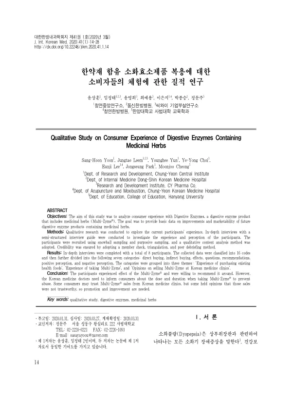

Qualitative Study on Consumer Experience of Digestive Enzymes Containing Medicinal Herbs
Yoon SH, Leem J, Yun Y, Choi YY, Lee E, Park J, Cheong M
The Journal of Internal Korean Medicine 41(1):14-28

첫 장 · 오픈액세스First page · open access
논문 소개Summary
건강기능식품은 임상시험으로 효과를 재기도 하지만, 실제로 사서 먹는 사람이 무엇을 기대하고 무엇을 겪는지는 다른 물음입니다. 어디서 어떻게 샀는지, 무엇을 궁금해했는지, 남에게 권할 마음이 있는지는 효과 크기와 별개로 그 제품이 쓰이는 방식을 정합니다.
이 논문은 한약재가 들어간 소화효소제를 실제로 먹어 본 사람들이 무엇을 겪었는지 물은 질적연구입니다. 제품을 개선하고 시장성을 가늠할 바탕 자료를 얻는 것이 목적이었습니다.
눈덩이 표집과 목적 표집으로 참여자를 모으고 반구조화된 면담 지침으로 심층 면담을 했습니다. 질적 내용분석을 썼고 참여자 확인과 삼각검증, 동료 검토로 신뢰성을 확보했습니다. 여덟 명과 면담을 마쳤고 자료는 16개의 코드로 나뉜 뒤 일곱 개 범주로 묶였습니다. 직접 구매와 간접 구매, 효과, 의문, 추천, 긍정적 인식, 부정적 인식입니다. 이 범주들이 다시 세 주제로 모였습니다. 기존 건강식품을 사 본 경험, 이 제품을 먹어 본 경험, 그리고 한의원에서 이 제품을 파는 것에 대한 의견입니다.
참여자들은 효과를 겪었고 주변에 권할 뜻이 있었습니다. 그러나 같은 면담에서 걸리는 대목도 나왔습니다. 한의원에서 파는 것을 믿을 만하다고 보는 사람이 있는 반면 그렇지 않다고 보는 사람도 있었습니다. 파는 자리가 신뢰를 더하기도 하고 덜기도 한다는 것이 함께 확인된 셈입니다.
저자들은 남용을 막으려면 한의사가 복용량과 복용 기간을 소비자에게 알려야 한다고 적었습니다. 효과를 확인한 연구가 아니라 겪은 사람의 말을 모은 연구이므로, 여기서 나온 「효과」는 참여자의 주관적 진술이지 임상적으로 검증된 효과가 아닙니다. 여덟 명의 면담이라는 규모도 함께 읽어야 합니다.
Clinical trials can measure whether a health functional food works, but what the person who actually buys and takes it expects and experiences is a different question. Where and how they bought it, what puzzled them, whether they would recommend it — these settle how a product is used, quite apart from any effect size. This is a qualitative study asking what people who had actually taken a digestive enzyme product containing medicinal herbs experienced, with the aim of gathering baseline data for improving such products and gauging their marketability.
Participants were recruited by snowball and purposive sampling and interviewed in depth using a semi-structured guide. Qualitative content analysis was used, with credibility secured through member checking, triangulation and peer debriefing. Interviews were completed with eight participants; the data were sorted into 16 codes and then into seven categories — direct buying, indirect buying, effects, questions, recommendations, positive perception and negative perception. These were grouped into three themes: experience of purchasing existing health foods, experience of taking the product, and opinions on its being sold at Korean medicine clinics.
Participants experienced an effect and were willing to recommend it to others. The same interviews, however, turned up a snag: some regarded sales through Korean medicine clinics as trustworthy, while others did not.
The authors write that Korean medicine doctors need to inform consumers about dose and duration to prevent abuse. Since this study gathered the words of those who used the product rather than testing it, the "effect" reported here is participants' subjective account, not a clinically verified one — and the scale, eight interviews, should be read alongside it.
인용Cite
Yoon SH, Leem J, Yun Y, Choi YY, Lee E, Park J, Cheong M. Qualitative Study on Consumer Experience of Digestive Enzymes Containing Medicinal Herbs. The Journal of Internal Korean Medicine. 2020;41(1):14-28. doi:10.22246/jikm.2020.41.1.14